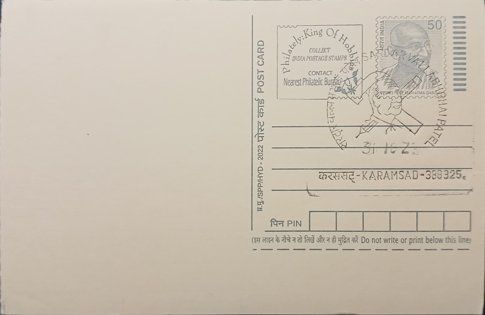

Sardar Vallabhbhai Patel
સરદાર વલ્લભભાઈ પટેલ


Vallabhbhai Jhaverbhai Patel was born on 31 October 1875 in Nadiad and grew up in the nearby village of Karamsad in Gujarat's Kheda district, in a family of modest landholding farmers. He matriculated relatively late and largely educated himself through independent reading before qualifying as a lawyer, eventually travelling to London's Middle Temple in 1910 and returning in 1913 to build a successful legal practice in Ahmedabad. It was his encounter with Mohandas Gandhi around 1917-18 that redirected his career from courtroom advocacy toward organised peasant politics, a shift that began with his involvement in the Kheda Satyagraha of 1918, a campaign against the colonial government's refusal to remit land revenue during a season of crop failure.
Patel's reputation as a mass organiser was cemented by the Bardoli Satyagraha of 1928, when he led the farmers of the Bardoli taluka in a disciplined, nonviolent refusal to pay an arbitrarily increased land tax, forcing the colonial administration to appoint an inquiry and ultimately restore the original rates. It was the women of Bardoli who are credited with bestowing on him the title 'Sardar', meaning chief or leader, a name that stuck for the rest of his public life. He went on to serve as president of the Indian National Congress in 1931, was repeatedly imprisoned by the British during the Civil Disobedience and Quit India movements, and became, alongside Gandhi and Nehru, one of the central figures steering the Congress party through the final decade of the independence struggle.
Upon independence in August 1947, Patel became Deputy Prime Minister, Minister of Home Affairs, and Minister of States in Jawaharlal Nehru's cabinet, and it was in the last capacity that he undertook the task for which he is most remembered: persuading, and where necessary pressuring, the rulers of more than 560 princely states to accede to the Indian Union rather than remain independent or join Pakistan. Working closely with civil servant V. P. Menon, he combined negotiation, financial settlements known as privy purses, and on occasion the threat or use of force, most notably in the operations concerning Junagadh, Hyderabad, and the contested case of Jammu and Kashmir, to complete the political unification of the subcontinent within roughly two years, a feat that earned him recognition as the 'Iron Man of India' and, posthumously, the Bharat Ratna in 1991.
As Home Minister, Patel was also the principal architect of India's unified civil service, overriding objections from several Congress colleagues to retain and reconstitute the colonial-era administrative cadre as the All India Services, which he described as the 'steel frame' essential to holding the new republic together. He oversaw the integration of police and administrative machinery across the newly merged states, managed the immense logistical and humanitarian crisis of Partition-related refugee resettlement in Delhi and Punjab, and took a hard line against communal violence while also playing a part in the eventual banning of the Rashtriya Swayamsevak Sangh following Gandhi's assassination in January 1948, a ban later lifted after the organisation agreed to adopt a constitution.
Patel died of a heart attack in Mumbai on 15 December 1950, and his memory is preserved today through numerous institutions and monuments bearing his name, including the Sardar Vallabhbhai Patel National Police Academy in Hyderabad, Sardar Patel University in Vallabh Vidyanagar near his native Karamsad, and the Statue of Unity, a 182-metre bronze-clad statue near the Narmada dam in Gujarat that was inaugurated in October 2018 as the tallest statue in the world. The Karamsad house where he spent his boyhood, along with the nearby Sardar Patel Memorial, continues to draw visitors and researchers interested in his early life, forming a modest but steady counterpart to the scale of the Statue of Unity located roughly a hundred kilometres away.
| Date of Introduction | October 31, 2002 |
|---|---|
| Address | Sub Postmaster, |
| Karamsad SO, | |
| Anand (dt.), Gujarat - 388325. |